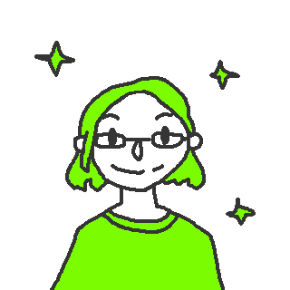

Jack of all trades, master of some. - vanarahvas

Hei! Olen Renee, Viljandimaalt Mustlast pärit aktiivne noor. Peale Tarvastu gümnaasiumi lõpetamist sel suvel
alustasin õpinguid Tartu Ülikoolis informaatika erialal.
Hobisid olen endale korjanud aja jooksul omajagu, seetõttu võib mind ka igasugustest erinevatest
paikadest leida. Tõenäolisemad kandidaadid oleksid siiski:
- bändiruumist - Õed-Vennad Ristikheinad Vähendatud Koosseisus (leidke meid Facebookist, Instagramist, Twitterist või Google+'ist),
- heli-, valgus- ja/või videopuldi tagant,
- lähimast käsitöökojast või
- mõnest muust paeluvast keskkonnast.
Kõige muu kõrval olen ka pikemat aega tegelenud programmeerimisega, mis on olnud ühendavaks lüliks erinevate huvide vahel. Mõned näited:
Javascript
Javascripti ja NodeJS koosmõjul toimib vabavaraline ülekatete lahendus
NodeCG, millele olen loonud videoülekannete tegemiseks erinevaid mooduleid.
Samuti olen välja töötanud erinevaid brauseripõhiseid snippeteid igapäevaelu lihtsustamiseks.
Samuti olen välja töötanud erinevaid brauseripõhiseid snippeteid igapäevaelu lihtsustamiseks.
Python
Python on olnud minu jaoks universaalne tööriist kiirete ülesannete
lahendamiseks. Nii olen vastuseid saanud mitmetele matemaatilistele küsimustele, alates
hüpoteeside kontrollimisest kuni muttide püüdimiseni.
Lisaks olen ma Pythoniga teinud nii mänge kui ka mängulisi utiliite elu ilu väljatoomiseks.
Lisaks olen ma Pythoniga teinud nii mänge kui ka mängulisi utiliite elu ilu väljatoomiseks.
C#
C# oli üks esimese programmeerimiskeeli, millega ma ennast kurssi viisin,
eelkõige just suunava ja abivalmi tutvusringkonna abil. Selle abil olen loonud mõned rakendused
nii arvutitele kui ka mobiilidele (UWP platvorm), suurim neist oli Telia MinuTV API-le toetuv
telekavarakendus (ajal, mis alternatiivid rakenduse näol olid puudulikud).